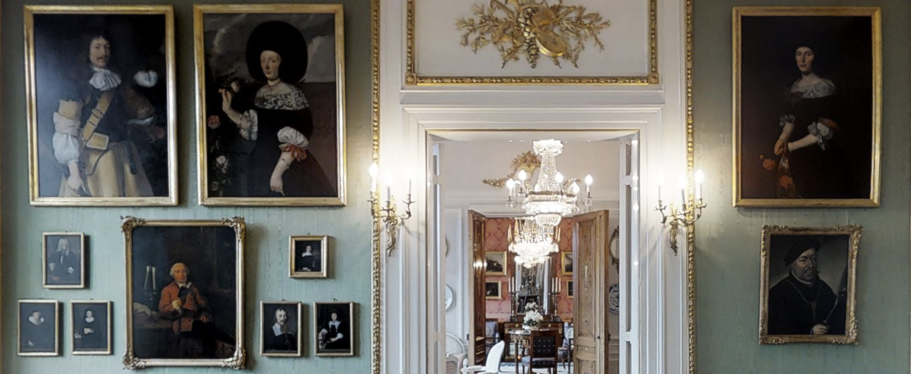
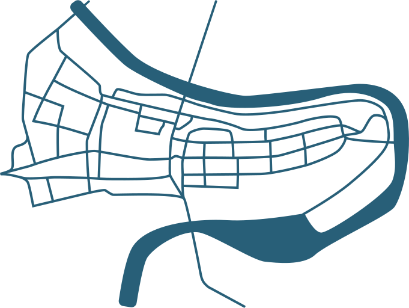
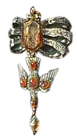

⬤


⬤
Die Wand wird zuerst wohl als bespielte Fläche wahrgenommen. Doch je länger man davor steht, desto eher lösen sich einzelne Elemente
davon ab.
Vielleicht sind das die zwei Damenportaits, die sich oben gerade loslösen.
Und vielleicht fokussiert sich die Wahrnehmung
nicht auf den ganzen Rahmen, sondern auf zwei spezifische Details.
Wo gibt es den Taubenanhänger noch?
Einige Gemälde gehören Institutionen.

⬤
Kunstmuseum Bern
⬤
Beatrice von Wattenwyl-Haus
⬤
Bernisches Historisches Museum
Hier befindet sich ein Portrait der Elisabeth von Werdt-Andreae, gemalt von Johannes Dünz um 1672, gezeigt in der Ausstellung «Das volle Leben. Alte Meister von Duccio bis Liotard», bis Ende September 2026.
×

Die oben gezeigten Portraits hängen im Grossen Salon dieses Gebäudes. Das Haus und die Ausstattung gehört seit Anfang des 20. Jahrhunderts dem Bund und wird vom Bundesrat zu Repräsentationszwecken genutzt.
×
Das Bernische Historische Museum bewahrt im Depot ein Gemälde auf, das der Gesellschaft zu Ober-Gerwern gehört. Diese entstand aus der Zunft der Lederhändler.
×

…
Andere Exemplare sind nicht so einfach zu finden.


⬤
Portrait von Barbe de Theisson (1663),
im Kunsthandel nachgewiesen
⬤
Portrait von Ursula Esther
Schöni (1670), in Privatbesitz
⬤
Portrait von Anna Maria Wyttenbach
(1682), Ort unbekannt
⬤
Portrait von Anna Maria Engel
(1686), Ort unbekannt
⬤
Portrait von Johanna Katharina Steiger
(1689), Ort unbekannt
⬤
Portrait von Johanna Katharina Steiger
(ca. 1689), Ort unbekannt
⬤
Portrait von Unbekannt (1689),
im Kunsthandel nachgewiesen
⬤
Portrait von Maria Lerber
(1693), Ort unbekannt
⬤
Portrait von Unbekannt (17. Jh.),
im Kunsthandel nachgewiesen
Die laufende kunsthistorische Erschliessung der Tauben findet sich auf dieser Seite ↗. Dabei ist von Interesse, wie die gesellschaftlichen Kontexte jener Zeit mit diesem inszenierten Symbol zusammenhängen.



Warum sehen die Anhänger alle gleich aus?
Warum sehen die Anhänger alle anders aus?
Die Ähnlichkeit zu Beginn zerfällt schnell in eine Vielzahl von Unterschieden.
Edelsteinbesatz, Brosche (oder auch keine Brosche), Perlenform... Je genauer man schaut, desto einzigartiger sind die Tauben.